Вторая Книга Иеу
(Пер. - А. Мома.)
(54)
42.
> > > > > > > > > > > > > > > > > > >
?
?
? КНИГА ВЕЛИКОГО ЛОГОСА,
?
? СОПРЯЖЕННОГО С ТАЙНАМИ
?
?
?
?
?
> > > > > > > > > > > > > > > > > > >
> > > > > > > > > > > > > > > > > > >
Сказал Иисус ученикам своим, окружавшим его - Двенадцати ученикам, вместе
с женщинами: "Обступите меня, двенадцать учеников и учениц1
моих, чтобы поведал я вам Великие Тайны Сокровища Света2,
которые в Невидимом Боге3, которого никто не знает. Эоны
Невидимого Бога не несут их, когда вы совершаете их - ибо они суть Великие
Сокровища Внутренней (Части) Внутренних (Частей)4. Также
Эоны Архонтов не выносят их, когда вы совершаете их, как и не могут ухватиться
за них. Но Приемщики5 Сокровища Света приходят и забирают
душу из тела, когда следуют они через все Эоны и Места Невидимого Бога,
и берут они ее в Сокровище Света. И стирают они все грехи, совершенные
ими осознанно и совершенные ими неосознанно. И они делают их Чистым Светом.
А душа долго перескакивает с места на место, пока не достигает Сокровища
Света. И она следует во Внутреннюю (Часть) Смотрителей Сокровища Света.
И они (т.е. души) следуют во Внутреннюю (Часть) Трех Аминь6.
И они следуют во Внутреннюю (Часть) Близнецов7, и они
следуют во Внутреннюю (Часть) Троесильного, и они следуют во Внутреннюю
(Часть) Чинов Пяти Деревьев8, и они следуют во Внутреннюю
(Часть) Семи Гласов9. И пребывают они в Месте, которое
внутри них, то есть в Месте Непостижимых (от) Сокровища Света. И, более
того, все эти Чины дают им свои (55) Печати и (свои) Тайны, ибо они стяжали
Тайны прежде, чем вышли из тела."
43.
Но когда закончил он говорить всё это, он еще раз сказал им: "Эти Тайны,
данные мною вам, оберегают их и не даны ими никому, кроме того, кто достоин
их. Не давайте же их ни отцу, ни матери, ни брату, ни сестре, ни родственнику,
ни ради еды, ни ради питья, ни ради женщины, ни ради золота, ни ради серебра,
ни ради чего-либо вообще из мира сего. Берегите же их и не давайте их вообще
никому ради благ даже целого мира сего. Не давайте их ни одной женщине
и ни одному мужчине, который хоть немного поклоняется Семидесяти Двум Архонтам10
или же служит им. Не давайте их еще и тем, кто служит Восьми Силам Великого
Архонта, (Силам), которые поедают менструальную кровь нечистоты своей,
а также сперму мужскую11, говоря: "Мы узнали Гнозис Истины,
и мы молимся Богу Истины". Их бог, однако, проклят.
Теперь же слушайте, что я скажу вам о его местопребывании. Он - Третья
Сила Великого Архонта. Кроме того, вот имя его: Тарихеас, сын Саваофа,
Адамаса. Он - враг Царствия Небесного. Лик его - лик (дикого) вепря12.
Зубы его торчат из пасти его, и у него другой лик сзади - львиный13.
Так берегите же себя, не выдавайте (Тайны) никому, (исповедующему) подобную
веру, и не выдавайте им Место Света и тех, кто внутри него, ибо оно - Сокровище
Света и те, кто внутри него, и именно его (56) эманировал Недостижимый
Бог. Не выдавайте же им сих Тайн Сокровища Света, не считая тех, кто достоин
того, кто отрекся от целого мира, и всех сует его, и всех его Богов и Божественностей,
и кто не исповедует никакой веры, кроме как Веры Света, следуя путем Сынов
Света14, подчиненных друг другу и представляющих друг
друга как Сынов Света15.
Так узрите же, я говорил с вами о Тайнах: берегите их. Не выдавайте
их никому, кроме тех, кто достоин их.
Вот теперь, когда оставили вы своих отцов, и матерей, и братьев, и весь
мир16 и последовали за мной, и исполнили вы все повеления,
предписанные мною вам, вот теперь послушайте меня, и я поведаю вам сии
Тайны. Истинно, истинно говорю вам, что дам я вам Тайну Двенадцати Божественных
Эонов17 и их Приемщиков и способ их вызова для того,
чтобы пройти в Места их. И я дам вам Тайну Невидимого Бога и Приемщиков
этого Места, и способ (их вызова, чтобы пройти)18 в Места
их.
А после всего этого я научу вас Тайне тех, кто из Середины, и Приемщиков,
и способу (вызова их для того, чтобы пройти в их Места)19.
И я дам вам Тайну тех, кто от Правой (Части), и Приемщиков их, и способ
(вызова их для того, чтобы пройти в их Места)20.
Но прежде всего этого я дам вам Три Крещения21: Водное
Крещение, Крещение Огнем и Крещение Духом Святым. И я дам вам Тайну вашего
избавления от зла Архонтов. А после всего этого я дам вам Тайну Духовного
Помазания22.
(57)И прежде всего велите тому, кому дам я Тайны сии, не давать ложных
клятв, и не клясться вовсе, и не совокупляться, и не прелюбодействовать,
и не красть, и не жаждать ничего, и не любить ни серебра, ни злата, и не
призывать ни Имя Архонтов, ни Имя Ангелов их, не красть, не злословить,
не лжесвидетельствовать, не клеветать, но говорить лишь "Да, да" и "Нет, нет"23. Словом, пусть исполняют благие заповеди."
44.
Тотчас же случилось, (что) когда Иисус закончил говорить сии слова ученикам
своим, и они были очень огорчены, они распростерлись у ног Иисуса, возрыдали
и восплакали. Они сказали: "Господи, зачем же ты сказал нам: Я дам вам
Тайны Сокровища Света?"
Но сердце Иисуса опечалилось из-за учеников его, ибо оставили они своих
отцов, и братьев, и жен и детей, и оставили они всякую жизнь мира сего,
и следовали за ним двенадцать лет, и исполнили все заповеди, которые он
предписал им.
Он ответил, сказав своим ученикам: "Истинно говорю я вам, я дам вам
Тайны Девяти Смотрителей Трех Врат Сокровища Света и способ (вызова их
для того, чтобы пройти в их Места)24. А еще я дам вам
Тайны Дитяти Ребенка25 и способ (вызова их для того,
чтобы пройти в их Места)26. А еще вслед за этим я дам
вам Тайну Трех Аминь и способ (вызова их для того, чтобы пройти в их Места)27.
А еще я дам вам Тайну Пяти (Деревьев) Сокровища Света и способ (вызова
их для того, чтобы пройти в их Места) 28. А еще вслед
за этим я дам вам Тайну Семи Гласов и (58) Волю Сорока Девяти Сил29.
А еще я дам вам Тайну Великого Имени Всех Имен, которая суть Великий Свет,
окружающий Сокровище Света и способ (вызова его) для того, чтобы пройти
внутрь Семи Гласов.
И истинно говорю я вам и велю вам исполнить Тайну Пяти Деревьев, и Тайну
Семи Гласов, и Тайну Великого Имени, которое суть Великий Свет, окружающий
Сокровище Света. Ибо тому, кто свершит всё это, не будет нужна никакая
иная Тайна Царствия Света, не считая Тайны Прощения Грехов.
Ибо нужно, чтобы всякий, верующий в Царствие Света мог только раз исполнить
Тайну Прощения Грехов. Ибо всякий, кто исполнит Тайну Прощения Грехов -
всех грехов, совершенных им осознанно или же неосознанно, с детства его
и до сего дня, и с сотворения мира до сего дня - все они (т.е. грехи его)
сотрутся, и его сделают Чистым Светом и возьмут в Свет этих Светов. И говорю
я вам, что пока они были на земле, они уже унаследовали Царствие Божье.
У них есть их часть в Сокровище Света, и они - Бессмертные Боги. А когда
стяжавшие эти Тайны и Тайну Прощения Грехов выйдут из тела, то все Эоны
расступятся один за другим, и они убегут на запад, в Левую (Часть)30
из-за души, стяжавшей Тайну Прощения Грехов, пока они (души) не достигнут
Врат Сокровища Света, и (пока) Смотрители Врат не откроют им.
Когда же достигнут они Чинов Сокровища, Чины также опечатают их своей
Печатью и дадут им Великое Имя их Тайны, и они проследуют в их Внутреннюю
(Часть).
Когда же они достигнут Чина Пяти Деревьев Сокровища Света, они дадут
им Великое Имя и они (59) опечатают их Печатью своей, и дадут они им Тайну
их, когда проследуют они во Внутреннюю (Часть) Семи Гласов.
Когда же достигнут они этого Чина, они дадут им Великое Имя. И они опечатают
их своей Печатью, и они дадут им их Тайну, когда проследуют они во Внутренние
(Части) Чинов, Не Имеющих Отцов, словно (в) Чин Мест их Наследия.
Эти Чины дадут им Великое Имя. И они опечатают их Печатью своей, и они
дадут им Тайну их, и проследуют они во Внутреннюю (Часть) Чина Тройных
Духов.
И дадут они им Великое Имя и Тайну, и они опечатают их Печатью своей,
пока не достигнут они Места Иеу31, который из Сокровища
Внешних (Частей), который властелин целого Сокровища.
Но когда достигнут они этого Места, он даст им Великое Имя и их Тайну,
и он опечатает их Печатью своей, пока они не придут в его Внутреннюю (Часть),
в Сокровище Внутренней (Части), в Места Внутренней (Части) Внутренних (Частей),
которые суть Безмолвие32 и Тишина, и останутся они в
этом Месте, ибо они стяжали Тайну Прощения Грехов.
И я дам вам всякую Тайну, чтобы исполнить вас во всякой Тайне Царствия
Света, чтобы вас можно было назвать Сынами Плеромы33,
Преисполненными Всякой Тайны.
45.
И тотчас же случилось после этих слов, (что) Иисус призвал своих учеников
и сказал им:
"Придите все и примите Три Крещения, прежде чем я поведаю вам тайну
Архонтов". Все ученики и ученицы пришли, и все сразу окружили Иисуса. Иисус
же сказал им: "Идите в Галилею34 и найдите мужчину или
женщину, в коих (60) умерла значительная часть зла - если это мужчина,
(то) не занимающийся соитием, если это женщина, (то) переставшая заниматься
связью (с) женщинами и не занимающаяся соитием, - и возьмите два сосуда
вина, и принесите их мне в место сие, и принесите мне лозы виноградные35".
Ученики же принесли два сосуда вина и виноградные лозы. Иисус же поставил
жертвоприношение, поставил один сосуд вина слева от жертвоприношения, а
другой сосуд вина поставил справа от жертвоприношения, придал жертвоприношению
можжевеловые ягоды, и касдаланфос, и нард. Он велел всем ученикам одеться
в льняные одежды36, вложил траву блошиного подорожника
в рот им и вложил Шифр Семи Гласов, то есть 9879, им в обе руки и вложил
им в обе руки солнечную траву, и поставил своих учеников перед этим жертвоприношением.
Иисус же встал у жертвоприношения, расстелил на том месте льняную одежду
и поставил на нее чашу вина, и возложил он на нее хлеба37
согласно числу учеников, возложил на место просфоры оливковые ветви и всех
их увенчал оливковыми ветвями. И запечатлел Иисус учеников своих такой
Печатью (рис. 47):
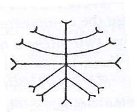
Истолкование же ее таково:
θηζωζαζ, имя же ее - σαζαφαρασ.
(61)И повернулся Иисус с учениками своими к четырем сторонам света,
велел им, чтобы они вплотную поставили стопы друг к другу,
и промолвил следующую молитву, сказав: "ιωαζαζηθ αζαζη ασαζηθ Аминь. Аминь.
Аминь.
ειαζει ειαζει δηθ ζαηθ ζαηθ Аминь. αρβαζαζαζα βαωζαζζαζ ζαζζоωζ Аминь.
αζααχαζαραχα ζαραχα ζαρβαθω ζαρβαθωζ ζαραει ζαραει ζαραει αζαραχα χαρζα βαρχα
θαζαθ θαζαθ θαζαθ Аминь.
Услышь же меня, Отец мой, Отец всего Отцовства, Бесконечный Свет38,
который (пребывает) в Сокровище Света. Да придут Пятнадцать Парастатаи
(Помощников)39, которые суть Дьяконы Семи Дев Света40,
которые над Крещением Жизни, Несказанные, имена коих таковы: Астрапа, Тесфойодэ,
Онотонтос, Синетос, Лахон, Подитаниос, Опакис, Файдрос, Одонтухос, Диактиос,
Кнесион, Дромос, Ейидетос, Полипайдос, Энтропон. Да придут они и окрестят
учеников моих Водой Жизни41 Семи Дев Света, и отпустят
им грехи и искупят злодеяния их, дабы причислили их к Наследию Царствия
Света. И если услышал ты меня и если смиловался над учениками моими и,
кроме того, если они причастны к Наследию Царствия Света, и если отпустил
ты грехи их и искупил злодеяния их, то да будет знамение и да придет Зорокофора42
и привнесет Воду Крещения Жизни в один из винных сосудов сих".
(62)И тотчас же случилось знамение, о котором говорил Иисус, и вино
слева от жертвы стало водою; и ученики подошли к Иисусу, и крестил он водой
их, и дал им от просфоры, и запечатлел их такой Печатью: ...
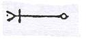
(рис. 48 крипт.)
И возрадовались ученики радостью чрезвычайной, ибо грехи их отпущены
были, и злодеяния их прощены были, и приобщились они к Царствию Света,
и поскольку были крещены они Водой Жизни Семи Дев Света, и стяжали Святую
Печать.
46.
Тотчас же случилось, (что) Иисус продолжил речь (свою) и сказал ученикам
своим: "Принесите мне лозы виноградные, дабы принять вам Крещение Огненное".
И принесли ему ученики лозы виноградные, он поставил благовоние, возложил
можжевельник, и мирру, и ладан, и смолу мастиковую, и нард, и касдаланфос,
и терпентин, и коричное масло. И он постелил на месте просфоры льняную
одежду и поставил на нее сосуд вина и положил на него хлеба по числу учеников.
И велел он всем ученикам своим облачиться в одежды льняные, и увенчал их
травой вербеновой, и вложил им в рот траву подорожника блошиного, и велел
им возложить Шифр Семи Гласов, то есть 9879, в обе руки их.
(63)И листья хризантемы вложил он в обе руки их, и положил траву полигонон
(?) под ноги им, и поставил их перед благовонием, поставленным им, и велел
им вплотную встать стопами друг к другу. И зашел Иисус сзади от благовония,
которое поставил, и запечатлел их такой Печатью (рис. 49):
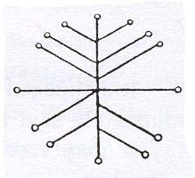
Вот имя ее: θωζαεηζ, вот истолкование ее: ζωζαζηζ.
(И) повернулся Иисус со своими учениками к четырем сторонам света, промолвив
такую молитву, сказав:
"Услышь меня, Отец мой, Отец всего Отцовства, Бесконечный Свет, да будут
ученики мои достойны принятия Крещения Огненного, и да будут отпущены грехи
их и искуплены злодеяния их, соделанные ими сознательно и несознательно,
с младенчества и до сего дня, и клеветы их, и проклятия их, и клятвопреступления
их, и кражи их, и ложь их, и лжесвидетельства их, и прелюбодеяния их, и
похоти их, и грабежи их, и (всё) то, что совершили они с младенчества своего
и до сего дня. Да изгладь всё это и очисти их всех, и вели Зорокофоре Мелхиседеку43
тайно прийти, дабы принес он воду Крещения Огненного Девы Света, Судьи.
Услышь же меня, Отец мой, я взываю к нетленным именам Твоим, которые
в Сокровище Света:
αζαρακαζα. α[...]αμαθκρατιταθ
ιω ιω ιω Аминь, Аминь. ιαωθ ιαωθ ιαωθ φαωθ φαωθ φαωθ χιω(εφоζπε) (64) χενоβινυθ
ζαρλαι λαζαρλαι λαιζαι Аминь, Аминь, Аминь. ζαζιζαυαχ νεβεоυνισφ. φαμоυ φαμоυ
φαμоυ. αμоυναι αμоυναι Аминь, Аминь, Аминь. ζαζαζαζι εταζαζα ζωθαζαζαζ.
Услышь же меня, Отец мой, Отец всего Отцовства, Бесконечный Свет, я
призываю Твои Нетленные Имена, которые в Сокровище Света, вели же Зорокофоре
(Мелхиседеку) прийти, дабы принес он Воду Крещения Огненного Девы Света,
дабы крестил я ею учеников моих.
Услышь же меня, Отец мой, Отец всех Отцовств, Бесконечный Свет. Да
придет Дева Света и окрестит учеников моих Крещением Огненным, отпустит
грехи их и искупит беззакония их, ибо призываю я Нетленные Имена ее (т.е.
Девы Света), то есть ζωθωωζα θоιθα ζαζζαωθ Аминь. Аминь. Аминь.
Теперь же услышь меня, Дева Света, Судья44, отпусти
грехи учеников моих и искупи злодеяния их, свершенные ими сознательно и
несознательно, с младенчества их по сей день, дабы быть им причисленным
к Наследию Царствия Света. А если Ты, Отец мой, отпустил грехи им и искупил
беззакония их и велел причислить их к Царствию Света, то яви мне знамение
в огне сего благовония".
И тотчас случилось знамение, о котором просил Иисус, огненное, и окрестил
Иисус учеников своих, дал им (вкусить) от просфоры и запечатлел на челах
их Печать Девы Света, повелевающей приобщить их к Царствию Света.
(65) И возликовали ученики, ибо приняли Крещение Огненное
и Печать, отпускающую грехи, и поскольку приобщились они к Наследию Царствия
Света. Вот (эта) Печать: ... (рис. 50 крипт.)
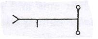
47.
Тотчас же случилось после этого, (что) Иисус сказал ученикам своим: "Узрите
же, вы приняли Крещение Водное и Крещение Огненное, а еще подойдите, и
крещу я вас Духом Святым".
Поставил он благовоние Крещения Духом Святым, возложил виноградные лозы,
и можжевельник, и касдаланфос, и шафран, и мастиковую (смолу), и корицу,
и мирру, и бальзам, и мёд. И поставил он два сосуда вина, один справа от
благовония, поставленного им, а другой слева, и возложил на него хлеба
по числу учеников.
И запечатлел Иисус учеников такой Печатью (рис. 51):
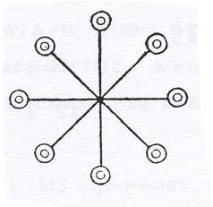
Вот имя ее:
ζακζωζα, вот ее истолкование: θωζωνωζ.
Тотчас же случилось, (что) когда Иисус запечатлел их Печатью, встал
он подле благовония, установленного им, поставил учеников своих подле благовония
и облачил их всех в одежды льняные, причем в обеих руках был Шифр Семи
Гласов, то есть 9879.
Иисус же возопил, сказав так: "Услышь же меня, Отец мой, Отец всего
Отцовства, Бесконечный Свет, ибо я взываю к нетленному имени Твоего Сокровища
Света:
ζαζαζαоυ ζωθζαζωθ
θωζαξαζωθ χενоβινυθ αθαηηυ ωζη ωζαηωζ κρоβιαλαθ.
Услышь же меня, Отец мой, Отец всех (Отцовств), (66) Бесконечный Свет,
ибо взываю я к нетленному Имени Твоего Сокровища Света. Отпусти же грехи
учеников моих, искупи злодеяния их, совершенные ими сознательно и несознательно,
совершенные ими с младенчества по сей день, и вели приобщить их к Наследию
Царствия Света. И если Ты, Отец мой, отпустил грехи учеников моих и искупил
беззакония их, и велел приобщить их к Наследию Царствия Света, то яви мне
знамение в просфоре".
И в тот же миг явилось знамение, о котором просил Иисус, и окрестил
он всех учеников своих Крещением Духом Святым, дал им вкусить от просфоры
и запечатлел чела их Печатью Семи Дев Света, повелевшей приобщить их к
Наследию Царствия Света. И возрадовались ученики радостью чрезвычайной,
ибо приняли они Крещение Духом Святым и Печать, отпустившую грехи, и искупившую
злодеяния их, и велевшую причислить их к Наследию Царствия Света. Вот эта
Печать: ... (рис. 52 крипт.)
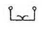
Иисус же свершил Тайны сии, причем ученики его пребывали облаченными
в одежды льняные и были увенчаны миртом, а во ртах их была трава подорожника
блошиного, и в обеих руках их был побег белой полыни, а стопами стояли
они вплотную друг к другу, и повернулись они к четырем сторонам света.
48.
Затем же, после всего этого, случилось, что Иисус поставил ладан этой Тайны,
забравшей зло Архонтов из учеников. Он велел им воздвигнуть кадильницу
на побегах фаласии. (67) Он положил на нее виноградные ветви, и можжевельник,
и бетель, и коши (?), и асбест, и агатовый камень, и сам ладан. И он велел
всем ученикам своим одеться в льняные одежды. Он велел им увенчаться мугвортом
(?) и вложил ладан в уста их. Он вложил Шифр Первого Аминь - 530 - в руки
их. Они же сомкнули стопы свои. Они остановились перед кадильницей, которую
он установил. Иисус же опечатал своих учеников такой Печатью (рис. 53):
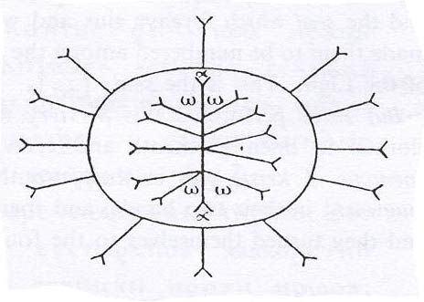
Таково истинное имя ее:
ζηζηζω ιαζωζ, таково его истолкование: ζωζωζαι.
Когда же Иисус закончил опечатывать учеников своих этой Печатью, он
снова встал к кадильнице, которую установил. Он произнес молитву,
говоря так: "Услышь меня, Отец мой, Отец всех Отцовств, Бесконечный Свет,
ибо я называю Твои Нерушимые Имена Сокровища Света:
νηρηπηρ. ζоφоνηρ. ζоιλθιζоυβαω ξоυβαω Аминь, Аминь, Аминь.
Услышь меня, Отец мой, Отец всех Отцовств, Бесконечный Свет. Услышь
меня и заставь Саваофа, Адамаса и всех Правителей прийти и забрать зло
из учеников моих."
Но когда он и ученики его произнесли сию молитву, обращая ее к четырем
сторонам всего мира, он всех их опечатал этой Печатью Двух Аминь, которая
такова (рис. 54):
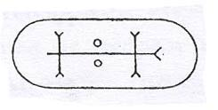
Таково ее Истинное Имя: ζαχωζακωζ,
таково ее истолкование: ζχωζоζоω.
И когда Иисус закончил опечатывать их
этой Печатью, (68) в этот момент Архонты забрали всё их зло из учеников.
И возрадовались они великой радостью, ибо всё зло Архонтов исчезло в них.
И когда исчезло в них зло Архонтов, ученики сделались бессмертными, и они
проследовали за Иисусом во все те Места, в которые они шли.
49.
Но Иисус сказал своим ученикам: "Я дам вам Оберег45 для
всех этих Мест, Тайну которых я уже давал вам, и (для) их Крещений, и их
Жертвенников, и их Печатей, и всех их Приемщиков, и их Шифров, и их Истинных
Имен, и их Оберегов, касающихся способа вызова их для того, чтобы идти
в их Места, чтобы вы проследовали во Внутреннюю (Часть) Внутренних (Частей)
их всех. Я назову вам имена их Оберегов и их Шифров.
Теперь же слушайте, и я поведаю вам об исходе ваших душ, поскольку я
рассказал вам все эти Тайны с их Печатями и их Именами. Когда вы выйдете
из тела и исполните сии Тайны, то все Эоны и всё, что внутри них сместится,
когда вы доберетесь до этих Шести Великих Эонов. Но они убегут на запад,
в Левые (Части), со всеми их Архонтами и всеми теми, кто внутри них.
Но когда вы достигнете Шести (Великих) Эонов, они будут удерживать вас,
пока не стяжаете вы Тайну Прощения Грехов, ибо именно эта Великая Тайна
находится в Сокровище Внутренней (Части) Внутренних (Частей). И она - полное
спасение души. И все, кто стяжает сию Тайну, превзойдут всех Богов, и все
Границы всех тех Эонов, которые суть Двенадцать Эонов Невидимого Бога,
ибо это - Великая Тайна Недостижимого, которая в Сокровище Внутренней (Части)
Внутренних (Частей). Вот поэтому всякий человек, кто уверует в Сына Света,
(69) должен стяжать Тайну Прощения Грехов, чтобы он стал полностью совершенным
и исполненным всех Тайн, ибо вот - Тайна Прощения Грехов. Вот тот, кто
стяжает от сих Тайн, и должен стяжать Тайну Прощения Грехов. Вот поэтому
и говорю я вам, что когда вы стяжаете Тайну Прощения Грехов, всякий грех,
совершенный вами осознанно и всякий, совершенный вами неосознанно, совершенные
вами с детства и по сей день, а также до разрешения от уз Плоти Геймармены
(Судьбы)46, - все (эти грехи) сотрутся, ибо стяжали вы
Тайну Прощения Грехов.
И когда вы будете готовы выйти из тела, и уже совершите Тайну сию, а
также Оберег ее, все Эоны, и все, кто в них, расступятся. Затем, опять
же, они убегут на запад, в Левые (Части), ибо стяжали вы Тайну Прощения
Грехов. И когда все Эоны расступятся, Свет Сокровища очистит Двенадцатый
Эон, чтобы все прямые пути, на которые ступите вы, очистились. И явится
Сокровище Света. И взглянете вы в Небеса Нижние, и увидите вы Прямые Пути
Мест всех Эонов, чтобы все они были очищены, ибо все, кто внутри них, убежали
на запад, в Левую (Часть).
Затем, опять же, когда очистятся Прямые Пути, я дам вам Тайну Прощения
Грехов, и ее Обереги, и ее Печати, и ее Шифры, и ее Истолкования.
Вы же сами, ученики мои, если уже стяжали их, когда готовы выйти из
тела, то вы сделаетесь Чистым Светом. И вы поспешите вверх, друг за другом,
и пойдете в Места, в которых распространяются все Эоны, пока не останется
никого на Прямых Путях, пока не достигнете вы Сокровища Света.
Затем Смотрители Врат Сокровища Света увидят Тайну (70) Прощения Грехов,
совершенную вами, и Обереги ее, и все Предписания ее. И увидят они Печать
на челах ваших, и увидят они Шифр в руках ваших.
Тогда Девять Смотрителей отворят вам Врата Сокровища Света, и вы войдете
в Сокровище Света. Смотрители же не станут говорить с вами, но они дадут
вам (свои) Печати и свою Тайну.
50.
Опять же, когда вы достигнете Чина Трех Аминь, Три Аминь дадут вам свою
Печать и свою Тайну. И, опять же, они дадут вам Великое Имя, и вы проследуете
в их Внутренние (Части).
Когда же вы пойдете в Чин Дитяти Ребенка, они дадут вам свою Тайну,
и свою Печать, и свое Великое Имя. Опять же, вы пройдете в их Внутренние
(Части).
Когда же вы достигнете Чина Спасителей-Близнецов47,
они дадут вам свою Тайну, и свою печать, и Великое Имя.
Опять же, вы пойдете в их Внутренние (Части), в Чин Великого Саваофа48,
того, что от Сокровища Света. Когда вы достигнете его Чина, он опечатает
вас своей Печатью, и он даст вам свою Тайну и Великое Имя.
Опять же, вы войдете в его Внутреннюю Часть, в Чин Великого Иао, Благого49,
того, кто от Сокровища Света. Он даст вам свою Тайну, и свою Печать, и
Великое Имя.
Опять же, вы войдете в его Внутреннюю (Часть), в Чин Семи Аминь50.
Опять же, они дадут вам свою Тайну, и свою Печать, и Великое Имя.
Опять же, вы войдете в его Внутреннюю (Часть), в Чин Пяти Деревьев Сокровища
Света, которые суть Недвижимые Деревья. Они дадут вам свою Тайну, которая
суть Великая Тайна, и свою Великую Печать, и Великое Имя Сокровища Света,
которое суть Царь над Сокровищем Света.
Опять же, вы пойдете во Внутреннюю (Часть) их (71) Внутренней Части,
в Чин Семи Гласов. Они дадут вам свою Великую Тайну и Великое Имя Сокровища
Света, и Печать свою.
Опять же, вы войдете в их Внутреннюю (Часть), в Чин этих Непостижимых.
Они дадут вам свою Тайну, и свою Печать, и Великое Имя Сокровища Света.
Опять же, вы войдете в их Внутреннюю (Часть), в Чин Бесконечных51.
Они дадут вам свою Тайну, и свою Печать, и Великое Имя Сокровища Света.
Опять же, вы войдете в их Внутреннюю (Часть), в Чин Абсолютно Бесконечных.
Они дадут вам свою Тайну, и свою Печать, и Великое Имя Сокровища Света.
Опять же, вы войдете в их Внутреннюю (Часть), в Чин Непорочных. Они
дадут вам свою Тайну, и свою Печать, и Великое Имя Сокровища Света.
Опять же, вы войдете в их Внутреннюю (Часть), в Чин Абсолютно Непорочных.
Они дадут вам их Тайну, и Великое Имя Сокровища Света, и Печать свою.
Опять же, вы войдете в их Внутреннюю (Часть), в Чин Неподвижных. Они
дадут вам свою Тайну, и свою Печать, и Великое Имя Сокровища Света.
Опять же, вы войдете в их Внутреннюю (Часть), в Чин Абсолютно Неподвижных.
Когда вы достигнете этого Чина, они дадут вам свою Тайну, и свою Печать,
и Великое Имя Сокровища Света.
(Опять же), вы войдете в их Внутреннюю (Часть), в Чин Не Имеющих Отцов.
Они дадут вам свою Тайну, и свою Печать, и Великое Имя (72) Сокровища Света.
(Опять же), вы войдете в их Внутреннюю (Часть), в Чин Абсолютно Не Имеющих
Отцов. Они дадут вам свою Тайну, и свою Печать, и Великое Имя Сокровища
Света.
Опять же, вы войдете в их Внутреннюю (Часть), в Чин Пяти Разрезов Света52.
Они дадут вам свою Тайну, и свою Печать, и Великое Имя Сокровища Света.
Опять же, вы войдете в их Внутреннюю (Часть), в Чин Трех Пространств.
Когда вы достигнете этого Чина, они дадут вам свою Тайну, и свою Печать,
и Великое Имя Сокровища Света.
Опять же, вы войдете в их Внутреннюю (Часть), в Чин Пяти Помощников53
Сокровища Света. Когда вы достигнете этого Чина, они дадут вам свою Тайну,
и свою Печать, и Великое Имя Сокровища Света.
Опять же, вы войдете в их Внутреннюю (Часть), в Чин Трижды Духовных
из Сокровища Света. Когда вы достигнете этого Чина, они дадут вам свою
Тайну, и Великое Имя Сокровища Света, и Печать свою.
Опять же, вы войдете в их Внутреннюю (Часть), в Чин Троесильных Великого
Царя Сокровища Света. Они дадут вам свою Тайну, и свою Печать, и Великое
Имя Сокровища Света.
Опять же, вы войдете в их Внутреннюю (Часть), в Чин Первой Заповеди54.
Он даст вам свою Тайну, и свою Печать, и Великое Имя Сокровища Света.
Опять же, вы проследуете в их Внутреннюю (Часть), в Место Чина Наследия
(Света). Они дадут вам свою Тайну, и свою Печать, и Великое Имя Сокровища
Света.
Опять же, вы войдете в их Внутреннюю (Часть), в Чин Места Безмолвия
И Покоя. Когда вы достигнете этого Чина, они дадут вам свою Тайну, и свою
Печать, и Великое Имя Сокровища Света.
Опять же, вы проследуете в их (73) Внутреннюю (Часть), в Чин Покровов
(т.е. в 27-й Чин), расстеленных пред Великим Царем Сокровища Света. Они
дадут вам свою Тайну, и свою Печать, и Великое Имя Сокровища Света. И они
расступятся, когда вы войдете и проследуете в них, чтобы достичь Великого
Человека, который суть Царь этого Всецелого Сокровища Света, (Царь), чье
имя – Иеу.
Когда вы достигнете этого Места, он увидит, что вы исполнили Тайну Всецелого
Сокровища Света, и Тайну Прощения Грехов, и его Оберегов, и его кадильницу,
которую вы установили, и все труды его, и (что) вы исполнили все предписания
этой Тайны, и все труды ее. Тогда Иеу, Отец Сокровища Света, возрадуется
вам. Более того, он также даст вам свою Тайну, и свою Печать, и Великое
Имя Сокровища Света.
Опять же, вы пойдете в Место Великого Света, окружающего Всецелое Сокровище
Света и всех тех, кто внутри него. Однако когда вы пойдете в это Место,
Иеу снова будет там, но он, Великий Свет, даст вам свою Тайну, и свою Печать,
и Великое Имя Сокровища Света.
Опять же, вы пойдете в Место Великого Света, окружающее Всецелое Сокровище
Света и всех, кто внутри него. Кода, однако, вы придете в это Место, Иеу
снова будет там, но он, Великий Свет, даст вам свою Тайну, и свою Печать,
и Великое Имя Сокровища Света.
Опять же, вы войдете в его Внутреннюю (Часть) через Врата Сокровища
Света, которые суть Второе Сокровище Света. Когда вы достигнете Смотрителей
Врат этого Второго Сокровища, назовите Тайну и ее Оберег.
И когда Смотрители откроют вам Врата Второго Сокровища Света (74), вы
войдете в их Внутреннюю (Часть), в Чин Троесильного Света. Вот их Имена:
ηαζαζω. ζωωαζ. ειωζ ηωζαζωζ. Вот таковы Имена Троесильных Света из
Второго Сокровища Света.
Опять же, когда вы достигнете Чина этих Троесильных Света, они также
дадут вам свою Великую Тайну Второго Сокровища Света, и свою Печать, и
Великое Имя Второго Сокровища Света.
Опять же, вы войдете в их Внутреннюю Часть, в Чин Двенадцатого Чина
Двенадцатой Великой Силы Эманаций Бога Истины, эманировавшего их.
Когда вы достигнете этого Чина, назовите Тайну Прощения Грехов и ее
Оберег. Более того, те, кто принадлежат сему Чину, также дадут вам свою
Великую Тайну, и свой Великий Оберег, и свою Печать.
Более того, они также от этого Чина, то есть от Двенадцати Сил Бога
Истины, а вот их Истинные Имена. Но есть Двенадцать Глав в этом Чине. Вот
каковы Имена этого Чина: ζωζηζωζα
ζωζηζαζ θωζωζαζ θηζηζωζ. αζωηζωζηα. θηζωζαη. ηζωηζαζ αθωζωησ ηζωηζ ζηηηψωζ ζαζ(оζ)[...]ζααζη(ι)ωζ.
Вот таковы их Истинные Имена.
Вот они-то одни и будут стоять в своем собственном Месте, и они воззовут
к Богу Истины этими Именами, говоря: «Услышь нас, Отче наш, Отец Всех Отцовств,
ιζ ζα [...] ζωζ ωωω ωωωω [εεε]
εεεε (75) ооо оооо υυυ υυυυ. ιζη. ζωζω. ζεζωζω. ζωζωоι. εζωιω. ειαπτθα, то есть, Отец всех Отцовств,
ибо всё, изошедшее из Альфы, вернется к (Омеге)55, когда
настанет Совершенство всех Совершенств. Мы же теперь назовем эти Нерушимые
Имена, чтобы Ты испустил эту Великую Силу Света, чтобы (она) следовала
за этими Двенадцатью Непостижимыми, которые суть Двенадцать Учеников, ибо
они стяжали Тайну Прощения Грехов. Ибо именно поэтому они не удержались
от достижения Сокровища Света.»
И вот немедленно после того, как они назвали эти Имена, воззвав к Богу
Истины, Бог Истины ниспослал (им) Великую Силу, чье Имя таково: θωρζωζ ζαζαωζ
Но в тот же миг эта Великая Сила Света выйдет позади учеников. И она
в этот момент побудит Сокровища Света, и их Чины посторониться, пока вы
следуете во Внутреннюю (Часть), и вы достигнете Сокровища Бога Истины.
Но сам Он, Бог Истины, даст вам свою Великую Тайну, и свою Великую Печать,
и свое Великое Имя, которое принадлежит Царю его Сокровища.
Опять же, вы будете петь хвалы, пока он взывает к Недостижимому Богу,
тому, кто один лишь есть Сущий. Но он, Недостижимый Бог, эманирует из себя
Силу Света, чтобы (она) пришла к вам, в Место Бога Истины и дала вам Характер
Сокровища Бога Истины. И она исполнит вас во всякой Плероме, и сотворит
вас в Чине этого Сокровища. И вы восславите Недостижимого (76) Бога, ибо
стяжали вы Тайну Прощения Грехов, пребывая в теле. И вы пребудете в Месте
Бога Истины, ибо вы стяжали Тайну Прощения Грехов, с ее Оберегом, и ее
Печатью, и ее Шифром, и всеми ее Заповедями, которые я дал вам.
Вот теперь, ученики мои, будьте терпеливы, и я также дам вам Тайну Прощения
Грехов, и ее Обереги, и ее Печать.»
51.
Но когда Иисус закончил говорить всё это ученикам своим и давать им
все эти Тайны, которые он только что совершил, он (т.е. Иисус) сказал своим
ученикам: «Ибо нужно, чтобы вы стяжали тайну Прощения Грехов, чтобы вы
могли стать Сыновьями Света и исполниться всех этих Тайн».
Когда Иисус, однако, закончил говорить всё это своим ученикам и учить
их Тайнам, ученики Иисуса сказали ему: «Господь наш и учитель наш, мы прибегли
к тебе, дабы ты поместил в нас Тайну Прощения Грехов, и ее Обереги, и ее
Печать, и ее Шифр, чтобы мы сделались Сыновьями Света, и чтобы Архонты
Эонов, которые вне Сокровища Света, не удерживали нас, и чтобы нас зачислили
в Наследие Царствия Света и исполнили всех Тайн».
Иисус же ответил своим ученикам: «Будьте терпеливы, и я поведаю ее вам.
Но вот, я сперва сказал вам, что прежде, чем я дам вам эти Тайны, я дам
вам Тайну Двенадцати Эонов, и Печати их, и способ вызова их, чтобы (вы
могли) идти в Места их.
Так слушайте же, так как вы стяжали Тайну Двенадцати Эонов, и Тайну
Крещения Воды Жизни, и Тайну Огненного Крещения, и Тайну (Крещения) Святым
Духом, и (77) Тайну Извлечения из вас зла, вот поскольку я сказал вам,
что дам вам их Обереги и способ (вызова их, чтобы достичь их Мест), а также
эти Печати – вот послушайте, и я поведаю вам их Обереги, которыми вы защитите их.»
52.
«Когда вы выйдете из тела и достигнете Первого Эона, а Архонты этого
Эона придут прежде вас, опечатайте себя этой Печатью (рис. 55):
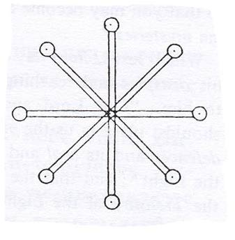
Таково ее Имя: ζωζεζη. Назовите его лишь однажды. Держите Шифр ее -
1119 - в обеих руках ваших. Когда вы завершите опечатывать себя этой Печатью
и лишь однажды назовете ее Имя, произнесите также и эти Обереги:
«Изыдите, πρоτε(θ)
περσоμφων. χоυσ, вы, Архонты Первого Эона, ибо я
призываю: νηαζα. ζηωζαζ. ζωζεωζ. Но когда Архонты Первого Эона услышат
эти Имена, они очень убоятся, и изыдут, и сбегут на запад, в Левые (Части),
а вы продолжите вознесение.
Когда же достигнете вы Второго Эона, χоυνχεωχ предстанет пред вами.
Опечатайте себя этой Печатью (рис. 56):
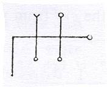
Вот ее Имя: оωζωαζ. Назовите его лишь однажды. Держите этот Шифр
- 2219 - в обеих ваших руках.
Когда вы закончите опечатывать себя этой Печатью и лишь однажды назовете
это Имя, произнесите также эти Обереги: «Изыди, (78) χоυνχεωχ, Архонт Второго
Эона, ибо я призываю ηζαωζ.
ζωηζα. ζωоζαζ.» Опять же, Архонты Второго Эона
изыдут и сбегут на запад, в Левые (Части), а вы продолжите вознесение.
Когда же достигнете вы Третьего Эона, то Иалдаваоф56
и χоυχω предстанут пред вами. Опечатайте себя этой Печатью (рис. 57):
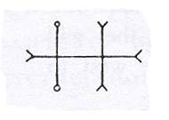
Вот ее Имя: ζωζεαζ . Назовите его лишь однажды. Держите этот
Шифр – 3349 – в ваших руках. Когда же закончите
вы опечатывать себя этой Печатью и назовете это Имя лишь однажды, произнесите
также эти Обереги: «Изыдите, Иадаваоф и χоυχω, вы, Архонты Третьего Эона,
ибо я призываю νζωζηζαζ. ζαωζωζ. χωζωζ.». Тогда изыдут Архонты Третьего
Эона и убегут на запад, в Левые (Части), а вы продолжите вознесение.
Когда же достигнете вы Четвертого Эона, то Самаэло57
и χωχωχоυχα предстанут пред вами. Опечатайте себя этой Печатью (рис.
58):
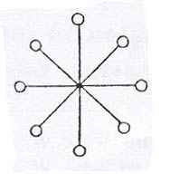
Вот ее Имя: αζωζηω. Назовите его лишь однажды. Держите этот Шифр
– 4555 – в руках ваших. Когда же вы закончите опечатывать себя этой Печатьюи лишь однажды назовете ее Имя, произнесите
также такие Обереги: «Изыдите, Самаэло и χωχωχоυχα, вы, Архонты Четвертого
Эона, ибо я призываю νζωζηζα.
χωζωζαζζα. ζαζηζω.» Когда же закончите вы
произносить эти (79) Обереги, Архонты Четвертого Эона сбегут на запад,
в Левые (Части). А вы продолжите вознесение.
Когда же достигнете вы Пятого Эона, ιαλθω и αιωκα и νσωαλ предстанут
пред вами. Опечатайте себя этой Печатью (рис. 59):
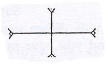
Вот ее Имя: αζηωζα. Назовите его лишь однажды. Держите
этот Шифр – 5369 – в ваших руках. Когда же вы закончите опечатывать
себя этой Печатью и лишь однажды назовете ее Имя, произнесите также такие
Обереги: "Изыдите,
ιαλθω, α(ι)ωχ.αισωαλ,
ибо я призываю νζωμαηωζηδωαζ. ζω[...]ωωζη.". Когда же закончите вы произносить эти Обереги, Архонты Пятого
Эона изыдут и сбегут на запад, в Левую Часть. А вы продолжите вознесение.
Затем вы достигнете Шестого Эона, названного Малой Серединой, ибо он
принадлежит Шести (Великим) Эонам, которые уверовали. Но у Архонтов этих
Мест внутри есть Малое Благо, ибо уверовали Архонты Мест этих. Тогда Архонты
Малой Середины, ζω[...]ζαωχ. ζωζωαζαω.
ωβαωθ. предстанут пред вами, думая,
что, быть может, вы не стяжали Тайн. Назовите же Тайны и опечатайте себя
этой Печатью, которая такова (рис. 60):
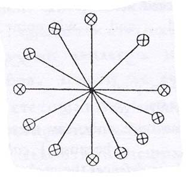
Вот ее Имя: ζαχωωωμαζωζ. Назовите его лишь однажды.
Держите этот Шифр – 6915 – в ваших руках.
(80) Когда же вы закончите опечатывать себя этой Печатью и лишь однажды
назовете ее Имя, произнесите также такие Обереги: «Изыдите, ζωζαωχα. ζωζωαζαω. ωβαωθ, Архонты Малой Середины, ибо мы стяжали Тайну Двенадцати Эонов и
ее Обереги, ибо мы призываем ζωζηαζα. χωζαηζ.
αχωζωηζ.» Немедленно назовите
также эти Имена, и эти Архонты сбегут и расчистят путь вам, и не схватят
вас. Ибо они предстали пред вами, думая, что вы, скорее всего, не стяжали
Тайны. Но они еще и возрадуются с вами великой радостью, ибо вы стяжали
Тайны, когда еще находились в теле. Опять же, они будут завидовать вам,
поскольку вы превзошли их. Опять же, вы продолжите вознесение.
Когда же вы достигнете Седьмого Эона, χωζωαζαχω. ιαζω. предстанет пред
вами. Опечатайте себя этой Печатью (рис. 61):
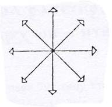
Вот ее Имя: χωζωφραζαζ. Назовите
его лишь однажды.
Держите этот Шифр – 7889 – в ваших руках. Когда
жевы закончите опечатывать себя этой Печатью и лишь однажды
назовете это Имя, произнесите также такие Обереги: «Изыдите, χωζωαζαχω. ιαζω.
ибо мы призываем ζωηζω. ζαχωζω. ζηαζω.» Опять же, Архонты Седьмого
Эона сбегут, а вы продолжите вознесение.
Но когда вы достигнете Восьмого Эона, те Архонты, которые суть ιαω. (α)σαχω αωειω. предстанут пред вами. Опечатайте себя этой Печатью (рис.
62):
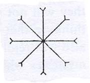
Вот ее Имя: ζωξαωζ. Назовите еголишьоднажды. Держите
этот Шифр – 8054 – в ваших руках.
(81) Когда же вы закончите опечатывать себя этой Печатью и лишь однажды
назовете ее Имя, произнесите также эти Обереги: «Изыдите, ιαωσ. ναχоι. αωειω, ибо мы призываем ζαααζωζ ζηιω.
ζηαζ ω?ωωζωαζ.
Опять же, Архонты Восьмого Эона сбегут, и вы продолжите вознесение.
Когда же вы достигнете Девятого Эона, βωζηωθ. ωζαι. ηξαναθα, Архонты
Девятого Эона предстанут пред вами. Опечатайте себя этой Печатью (рис.
63):
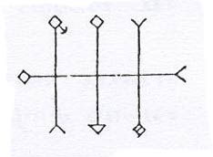
Вот ее Имя: ζωφρακασ. Назовитеего
лишь однажды.
Возьмите этот Шифр – 2889 – в руки ваши. Когда же вы закончите опечатывать
себя этой Печатью,
и лишь однажды назовете ее Имя, произнесите также эти Обереги: «Изыдите,
βωζηωθ. ωζαι. ηξαναθα, ибо мы призываем νζωη. ζωζα. ηηζηζωζ. χωζωηζ». Опять
же, Архонты Девятого Эона сбегут, и вы продолжите вознесение.
Но когда вы достигнете Десятого Эона, ωβαθωι. оωσαω(θ) θωιαζ. Архонты
этого Эона предстанут перед вами. Опечатайте себя этой Печатью, которая
такова (рис. 64):
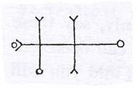
Таково ее Имя: θωζαωζ. Назовите
еголишьоднажды.
Возьмите этот Шифр – 4559
– в ваши руки.
Когда же вы закончите опечатывать себя этой
Печатью и лишь однажды назовете ее Имя и лишь однажды опечатаете себя,
произнесите (82) также эти Обереги: «Изыдите, ωε(β)θωι. ιоωσαωθ. θωιαζ.
ибо мы призываем νδηωζαζι. ωωωζωαζ.
χωζωαζ..» Опять же, Архонты Десятого
Эона сбегут, а вы продолжите вознесение.
Но когда вы достигнете Одиннадцатого Эона, αγεωνε. ζωτεωζ. ζησεων
Архонты этого Эона предстанут пред вами. Опечатайте себя такой Печатью
(рис. 65):
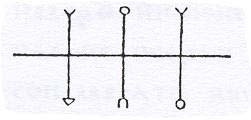
Вот ее Имя: ζωξαζη. Назовите его лишь однажды. Держите этот Шифр - 5558
- в ваших руках. Но когда вы закончите
опечатывать себя этой Печатью и лишь однажды назовете это Имя, произнесите
также эти Обереги: "Изыдите, γενεζω. αυτоζωχ. πιατενζαχω., ибо мы призываем
ηωαζαη.
ζαηζωζ. χωζαμαω. Опять же, Архонты Одиннадцатого Эона сбегут, а
вы продолжите вознесение.
Но когда вы достигнете Двенадцатого Эона, в том Месте пребудет Невидимый
Бог вместе с Барбело58 и Непорожденным Богом. И Невидимый
Бог находится только в Месте Двенадцатого Эона. И покровы расступились
пред ним. Ибо в том Эоне есть много прочих Богов, называемых в Сокровище
Света Архонтами. Они – Великие Архонты, правящие над всеми Эонами. Именно
они прислуживают Невидимому Богу, и Барбело, и Непорожденному. Опять же,
Архонты этого Эона предстанут пред вами. Вот их Имена:
χαρβυωθω. αρζωζα. (83) ζαζαξαωθ. Опечатайте (тогда) себя такой Печатью (рис. 66):
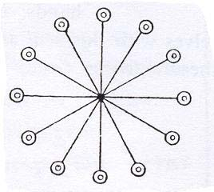
Вот ее Имя: ζφρκα[...] Назовите его лишь однажды. Держите этот Шифр
– 9885 – в руках ваших. Когда же закончите вы опечатывать себя этой Печатью
и лишь однажды назовётеэто Имя, произнесите также
эти Обереги: «Изыдите,
ζαμηωαι. εων(ι)ζα. βαρβωηυ. ибо мы призываем ζηηζω. ζαωζ. χωζωαζ. αχαζωη.» Опять же, Архонты Двенадцатого Эона Невидимого Бога
сбегут, ибо вы стяжали Двенадцать Оберегов Двенадцати Эонов. Тогда вы продолжите
вознесение. Тогда вы достигнете Тринадцатого Эона59,
где пребывают Великий Невидимый Бог с Великим Девственным Духом и Двадцатью
Четырьмя Эманациями Невидимого Бога60, которые в этом
Месте. Но Двадцать Четыре Эманации Невидимого Бога предстанут пред вами,
желая удержать вас – из-за Тайн, которые вы стяжали. Таковы Бессмертные
Имена Двадцати Четырех Эманаций, которые предстанут пред вами. Первая – αυτоγεθω. Вторая – αυτоχωα. Третья – αγενηζω. Четвертая – αηαα. Пятая –
ωσω. Шестая – ιεω. Седьмая – ω(ι)α. Восьмая – σαωεβω. Девятая – ωαθω. Десятая –
σασωθωεσ. Одиннадцатая – αλθωζω. Двенадцатая – ιωαβωη. Тринадцатая – θαισαβω.
Четырнадцатая – ναωι. Пятнадцатая – ιαωσαε. Шестнадцатая – αισωρα. Семнадцатая –
ιααεωσ. Восемнадцатая – [...]αω, Девятнадцатая – ε[...]αβ. Двадцатая – βα[...]αω.
Двадцать Первая – αλαεβα. Двадцать Вторая – χα[...]. Двадцать Третья – αριρα[...]
Двадцать Четвертая – αλ[...]β[...]
(84) Таковы Имена Двадцати Четырех Эманаций Невидимого Бога, которые
я только что назвал. Они предстанут пред вами, желая задержать вас, так
как они завидуют вам из-за тех Тайн, которые вы стяжали. Произнесите (тогда)
такие Обереги: «Изыдите, Двадцать Четыре Эманации Невидимого Бога» и назовите
Имена этих Двадцати Четырех Эманаций. Опечатайте себя этой Печатью (рис.
67):
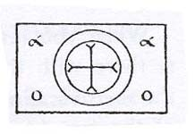
Вот ее Имя: ζαξαφαρασ. Назовите его лишь однажды и возьмите этот Шифр
– 8855 – в руки ваши. Когда закончите вы опечатывать
себяэтой Печатью илишьоднажды назовете ее Имя,
произнесите также эти Обереги: «Мы призываем σαζαζα. αιωωζαηζη. ζωζωμαζα. θρωζωεζ. αχωζηω.
ζωη. ζαη. ωωω ωωω ωωω ωωω ηηη ηηη ηηη ηηη εεε ζαηζωαζ. ζηωζωε. ζηζη. ζηωζ. ζωιζη.
χωζωεζω. ζηεζω.» Когда же закончите вы призывать
эти Имена Сокровища Света, скажите также: «Изыдите, Двадцать Четыре Эманации
Невидимого Бога, чьи Имена мы только что произнесли сначала». Между
тем, как только эти Имена Сокровища Света и его Оберегов будут произнесены,
они сбегут, и вы продолжите вознесение.
Но когда вы достигнете Четырнадцатого Эона, там пребудет Второй Невидимый
Бог. И там пребудет Великий Бог, названный в Четырнадцатом Эоне Великим
Благодетельным Богом [...] (85) Более того, он – Сила всех этих Архонтов
Света, которые внутри всех Эонов, а именно – Трех Богов, которые во Внешних
(Частях) Сокровища Света. Ибо в этом Эоне есть множество Сил. Но они не
столь многочисленны, как те, что в Эонах за их пределами. Но эти Силы предстанут
пред вами, желая завладеть вами, так как они завидуют вам из-за Тайн, которые
вы стяжали, чтобы удержать вас с тем, чтобы вы совершили Тайны мои в их
Местах, чтобы они также могли стяжать Силу от Сил Сокровища Света. Но говорю
я вам – опечатайте себя этой Печатью (рис. 68):
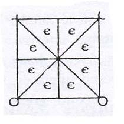
Вот ее Имя: ζωεζωζηιαζαχ. Назовите его лишь однажды. Возьмите
этот Шифр - 8869 - в рукиваши.Снова
произнеситетакой
Оберег: «Изыдите, все Силы Второго Невидимого
Бога, ибо мы призываем ζωωζηαζ. αχωηζω.
ζηηη. ζωαζηζ.». И Силы этого
Эона сбегут, а вы продолжите вознесение.
Но когда вы достигнете этого Места сих Трех Архонтов, которые внутри всех
этих Невидимых, а именно – Троесильных Богов, которые во Внешних (Частях)
Сокровища Света, то есть Архонтов Света, ибо эти Три Архонта внутри всех
Эонов, а те, кто во Внешних (Частях) всех Сокровищ превыше всех Богов,
которые во всех Эонах, так вот, когда вы достигнете этого Места, они увидят
вас, (увидят), что вы стяжали эти Тайны. Они же также стяжали Тайны Сокровища
Света, ибо когда эманировала Первая Сила, они были первыми, оставшимися
в ней, и когда они снизошли, Царствие Света проповедовало им. Она (Первая
Сила) также дала им эти Тайны, которые я дал вам. Но они не узрели Тайну
Прощения Грехов. Из-за этого их и не взяли еще в Сокровище Света, ибо они
еще не стяжали Тайну Прощения Грехов. Засим я говорю вам: Когда я приду,
чтобы свернуть (86) все Эоны61, я дам Тайну Прощения
Грехов этим Трем Архонтам Света, которые суть последние из всех Эонов,
ибо они веровали в Тайну Царствия Света.
Но когда вы достигнете этого Места, они увидят вас, что вы стяжали все
эти Тайны, как и Тайну Прощения Грехов. Они овладеют вами, чтобы в этом
Месте - ибо еще не стяжали они Тайну Прощения Грехов - вы совершили с ними
эти Тайны, которые вы стяжали. Вот потому и говорю я вам, что не можете
вы идти в их Внутреннюю (Часть), пока не стяжаете первыми Тайну Прощения
Грехов. Не бойтесь же теперь, ибо сказал я, что нельзя вам идти в Сокровище
Света, пока не стяжаете вы Тайну Прощения Грехов. Но они будут удерживать
вас в Месте Трех Архонтов Света. Вот о том и говорю я вам, что в этих Местах
нет места искуплению, ибо все в этом Месте стяжали Тайны, и не могут они
наказать вас в этих Местах. Но они овладеют вами в этих Местах, пока не
стяжаете вы Тайну Прощения Грехов. Опечатайте себя этой Печатью (рис. 69):
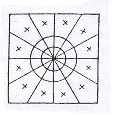
Вот ее Имя: ζωωεζωηζαιω. Назовите его только однажды. И держите
этот Шифр – 5555 (согл. Шмидту 4554) – в руках ваших. Когда же закончите
вы опечатывать себя этой Печатью и лишь однажды назоветеэто
Имя, произнесите также эти Обереги: «Мы призываем тебя, ζωεζηαζεχωεζωη. ωεζηαζ. ειωζηαω. ζαζηω. ζαζηωζω.» Когда же закончите вы призывать эти Имена,
Приемщики этих Мест узнают вас, и они заполучат вас себе, ибо (вы стяжали
Тайну Прощения Грехов)...
(как минимум 4 строки в конце текста утеряны)...
(87)
(ФРАГМЕНТ ГНОСТИЧЕСКОГО ГИМНА.)
Услышь меня, когда я восхваляю тебя,
Тайна, сущая прежде
всякого Непостижимого и всякого Бесконечного. Услышь меня,
ибо
я пою хвалу тебе, Тайна, светящая в твоей Тайне, чтобы исполнилась
Тайна, сущая от начала. И когда (ты) светила, (ты) сделалась
Водой
Океанской, чье Нерушимое Имя
таково: αηζωα. Услышь меня,
ибо я пою хвалы тебе, Тайна, сущая прежде всякого Непостижимого
и всякого Бесконечного, светившего
в твоей Тайне. Земля же
в середине этого Океана была очищена, и ее Нерушимое Имя таково:
αζωαε. Услышь меня, когда я
пою хвалы тебе, Тайна,сущая
прежде всякого Непостижимого и всякого Бесконечного, светившего
в Тайне твоей. Вся Сильное Вещество Океана,
то есть Море, со
всякими видами в нем, было очищено,
и его Нерушимое Имя
таково: αωζωε. Услышь же меня,
когда я пою хвалы тебе, Тайна,
сущая прежде всякого Непостижимогои всякого
Бесконечного, светившего в Тайне твоей. И когда (ты)
светила, (ты)
опечаталаМореивсё,что в нем, ибо Сила в них
взбунтовалась, а Нерушимое Имя
ее таково: [...] Услышь меня,
когда я пою хвалы тебе, Тайна, сущая прежде
всякого
Непостижимого [...]
(88)
(ФРАГМЕНТ О ПРОХОЖДЕНИИ ДУШИ
ЧЕРЕЗ АРХОНТОВ ПУТИ СЕРЕДИНЫ.)
[...] (похищая) души воровством, и когда они возьмут душу мою в это
Место, он (?) даст им Тайну их страха, которая суть χαριηρ
. И когда
они возьмут ее в Места всех Чинов Параплекса62, великого
и сильного
Архонта, распространившегося на Путях Середины,
похищающего
души воровством, когда берут они душу мою в это Место, он (?) дает
им Тайну их страха, которая суть αχρω[...] И, опять
же, возьмут они
душу мою в Место всех
Чинов Яхфанабаса, великого, сильного
Архонта, полного гнева, Преемника
Архонта Тьмы Внешней, в
Место, в котором меняются все образы, (в Место Архонта),
который
силен и распространяется на Пути Середины, который похищает души
воровством, когда они возьмут душу мою в это Место, он (?) даст им
Тайну их страха, которая суть [...]
И, опять же, они возьмут душу мою в Место Тифона63,
великого,
сильного Архонта (с) [мордой] осла, распространяющегося
на Пути
Середины, похищающего души воровством, когда они возьмут душу
мою в это Место, он даст им Тайну их
страха, которая суть πραωρ
И, опять же, когда они возьмут душу мою в Место Всех Чинов Яхфа-
набаса64, великого, сильного Архонта,
полного гнева, Преемника
Архонта Тьмы Внешней, (в) Место, в котором меняются все Облики,
который силен, который распространяется
на Пути Середины,
(и) похищает души воровством, когда они возьмут
душу мою в это
Место, он даст им Тайну их страха, которая суть αυηρνεβρωαθ(ρα) ...
(5 строк в конце фрагмента практически не читаются.)
* * *
См. Примечания к этой книге Иеу.